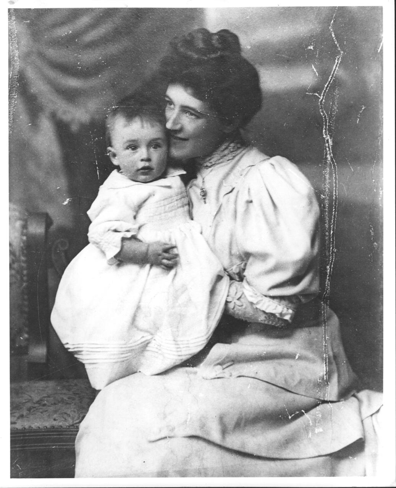
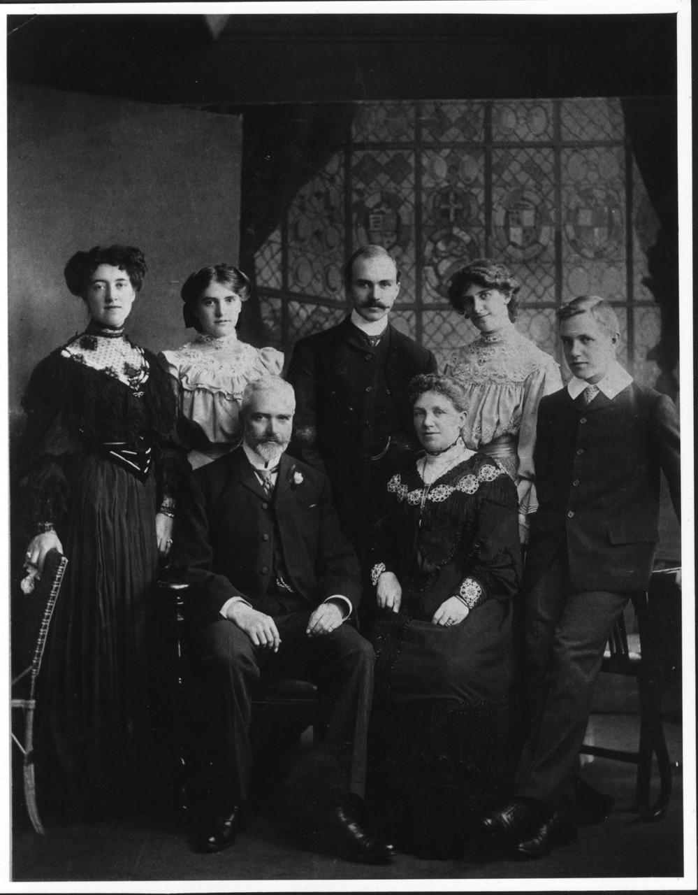

A memoir of Marion Nellie Clark, drawn from the shared James and Marion memoir by Colin Grant Clark and Margaret Hinton.
Original James and Marion memoir PDF


My mother was born in Birmingham on August 31st 1880, the eldest of the five children of William and Marion Jolly. The name Jolly was Huguenot, and William's wife had been Marion Hart, and was nineteen at the time of my mother's birth. There was also an Essex connection with a farming family called Yeulett, and there are still Yeuletts living near Braintree. I think that this was on the Hart side of the family. My mother had two brothers and two sisters; 'Buff', a nickname for the elder brother, died as quite a young man, Jessie married a doctor, and had one son Richard Haines, an anatomist, and Madge married a Kenyon, a highly successful firm of London undertakers, and had several children. Frank, the youngest, stayed in Birmingham, and did very well in business.
Nellie, as her family called her, (but not my father, who always used Marion), went to King Edward's School, Birmingham, and proved to be musical, and to have a good soprano voice. She entered the Royal Academy of Music in London at the turn of the century, and took her LRAM in singing and piano, gaining a bronze medal for singing. Her parents must have been progressive people to allow her to do this, and to finance it. She had a beautiful voice, and when I was a child I would sit on the stairs in Plymouth and listen to her singing Mozart to guests after dinner. I was supposed to be in bed, needless to say. Perhaps during her stay in London, she met Mother Cecile, the Mother Superior of the South African House of the Anglican Community of the Resurrection, and was invited to go out to Africa with them to help with the music for their Services. She told me once that she had gone 'to teach the nuns to sing'. Her parents could accept this as a possible visit for her, and her Album has a poem written by Sister Marcia, dated April 15th 1903, while they were travelling to Cape Town on the Royal Mail Steamer, 'Walmar Castle'.
I do not know how long she stayed with the Community, but she met my father while in South Africa, and became engaged to him. There are two entries made by him in the Album, one signed James Clark, but by August 3rd, 1904, it was 'Jim', and he wrote her a poem.
'Twas in the month of April
When first I met my Marion
And never can forget her.
For Memory in its hours of pride
Midst pearly gems hath set her.
This is followed by a quotation, probably from Burns. My mother came home for her marriage, on October 18th, 1904, at Water Orton Church, Warwickshire, followed by a honeymoon at the Royal Hotel, Bath. As far as I know, it was a very happy marriage. My father always treated my mother with great courtesy and respect, and I never heard them quarrel, even when things went so wrong for them at the end of my father's life.
The story of their life together, and of the birth of their four children, Colin in 1905, Kenneth in 1907, myself in 1911 and Malcolm in 1913, is told in my father's biography, which Colin has written, up to the time of my father's death in August 1927. Circumstances were very difficult, but my mother behaved with great courage, and found various ways of making some money. She worked for the Accra Diocesan Association, in an honorary capacity, but with some payment, collecting funds which were sent out to the Gold Coast, as Ghana was then called, for religious and educational purposes. Shortly after my father's death, she paid a visit to Africa, staying with the Anglican Bishop of Accra, John Aglionby, a family friend, in order to see more of the work being done. She started writing, and a number of her stories about Africa were published on the back page of the (then) Manchester Guardian, very much in the top flight of journalism at that time, and for which she received £5 for a thousand words, then a high rate of pay. Some of these stories were collected into a book, 'The Graven Image', and published by John Lane, The Bodley Head in 1939, at a bad time for publicity, just before the War. She used the Yeulett name for this book, and for much of her writing, perhaps thinking it more memorable than Clark. I remember that a reviewer compared her to Katherine Mansfield, and that gave her much pleasure.
During the thirties she moved to London, renting a small house in New Street, now Maunsel Street, between Horseferry Road and Vincent Square, Westminster, and was there when the War started in September 1939. She was persuaded to leave London for the safety of Devonshire for a while, but soon went back again in spite of all our efforts to keep her in the country, and was in the house when it was bombed during the blitz on London in December, 1940. The house was badly damaged, she was not actually hurt, but had a severe stroke two days later. We knew that her blood pressure was high, but there was no drug treatment available in those days, and the doctors could only advise rest, and she was too active for that, in spite of a bad arthritic hip, which made walking difficult. I was called to London from Linton, Cambridgeshire, to find her paralysed and speechless, in a nursing home. There was no National Health to help then, and no recovery could be expected, but we were able to move her to a nursing home in Cambridge, where I could be with her as often as possible, and she died on February 2nd 1942, a sad end to the life of a very vigorous and exciting person.